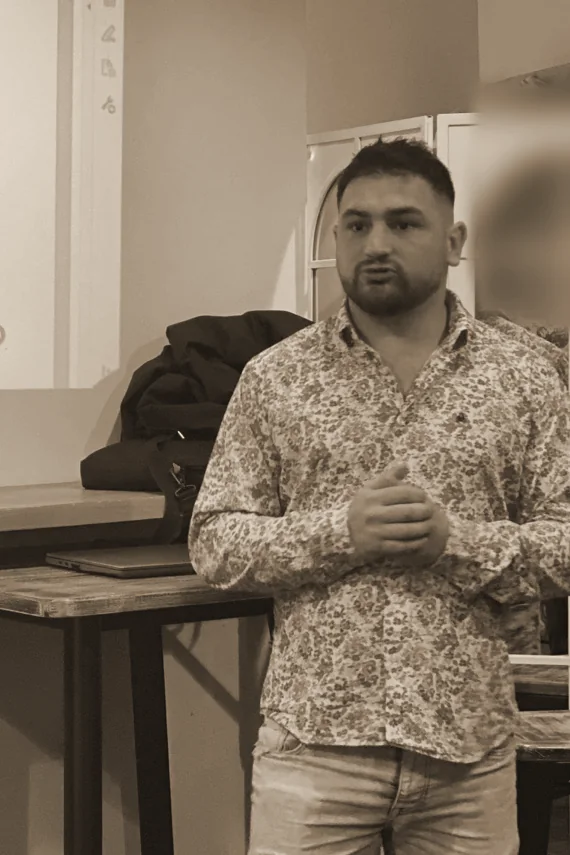

J’aimais ma vie. Et j’avais de grands rêves.
Banquier le jour, entrepreneur le soir.
Voici comment j’en suis arrivé là.

En 2020, j’avais 29 ans. Ma vie tournait autour du rugby, de mes amis, de ma famille et de mon travail. Je vivais bien, mais j’avais aussi des rêves auxquels je tenais.
On me disait parfois « Guillaume, arrête de rêver ». Moi, j’avais envie de leur donner une chance. Je pensais à l’entrepreneuriat, sans savoir dans quoi me lancer ni comment commencer.
J’ai passé des entretiens pour devenir agent général d’assurance. Les échanges se passaient bien, mais en discutant avec des proches qui connaissaient le métier, j’ai compris que ce n’était pas la vie professionnelle que je recherchais à ce moment-là.
Un appel a ouvert une autre possibilité.
À cette période, un ami m’a appelé.
« Tu aimes voyager. Et si tu en faisais une activité ? »
Je ne crois pas beaucoup au hasard. Plutôt aux rendez-vous. Cette proposition arrivait à un moment où je cherchais justement ma voie.
Ce qui m’a plu, c’était de pouvoir entreprendre autour du voyage tout en gardant mon emploi. En 2021, je me suis lancé.
J’ai longtemps pensé pouvoir avancer seul.
Au début, je ne voulais pas me former. Je pensais pouvoir trouver ma propre façon de faire et obtenir de meilleurs résultats seul.
Ça a fonctionné un temps, avec probablement une part de chance. Puis j’ai plafonné.
J’ai fini par me former, écouter et remettre certaines habitudes en question. Et j’ai découvert que j’aimais apprendre autant que transmettre.

Aujourd’hui.
Je repense souvent à mes débuts quand j’accompagne quelqu’un. Je connais les questions qu’on se pose, les hésitations et la difficulté de trouver sa place dans une activité nouvelle, à côté de son travail.
Aujourd’hui, je propose l’accompagnement que j’aurais dû accepter dès le départ. Quelqu’un avec qui préparer ses premiers échanges, parler de ses difficultés et réfléchir à la suite.
Cinq ans plus tard, je continue d’apprendre. Et j’aime partager ce chemin avec ceux qui ont, eux aussi, envie de se lancer.
Si tu te reconnais dans mon histoire, on a déjà un point commun.
Et toi, quelle sera
ton histoire ?
Un voyage à préparer ou une activité à construire à côté de ton emploi : parlons-en, simplement.